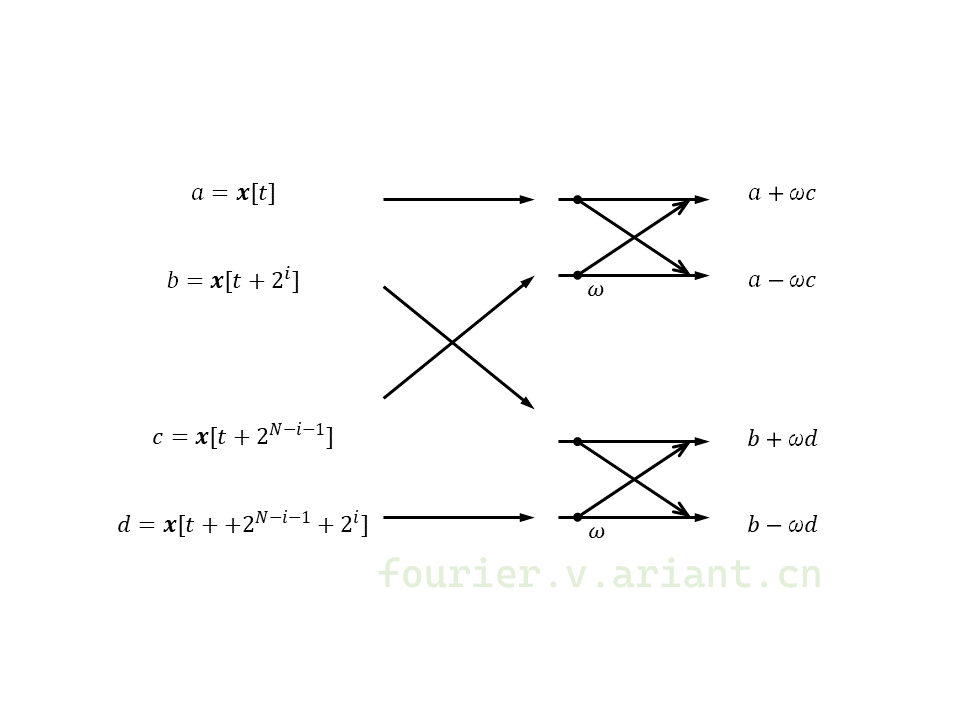
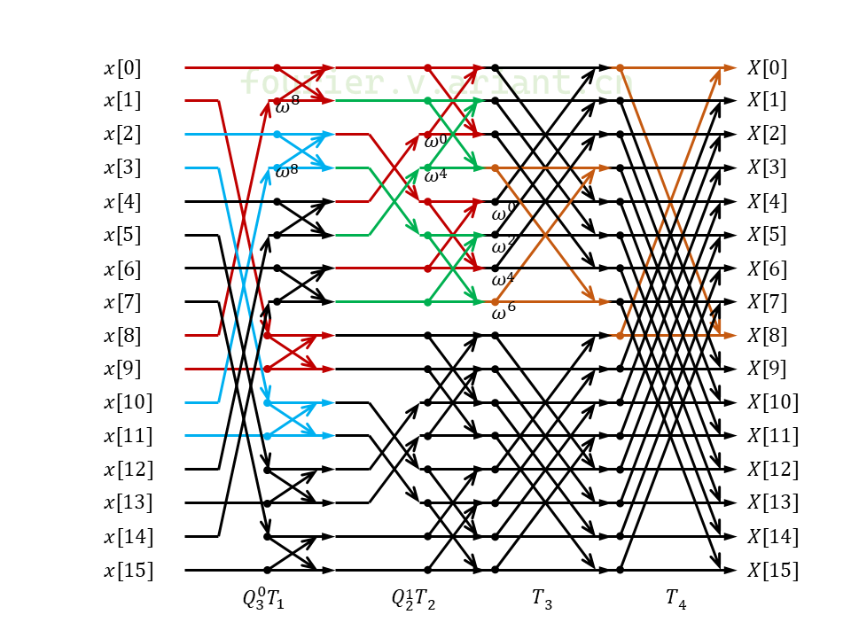
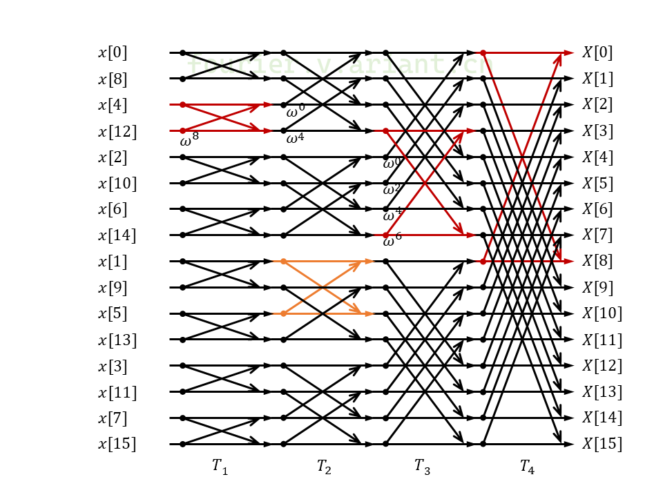

7071专栏是快速傅里叶变换（FFT）相关话题的文集。由zhxxch在fourier.v.ariant.cn以CC-BY-SA许可发布。
目录：
传统的计算快速傅里叶变换的Cooley-Tukey算法效率极高，因其主要由蝶形运算构成，所以代码形式也非常简单，只是需要将输入或者输出按照位反转的方式重新排序。
这个重新排序的步骤并不是必须的。Clive Temperton于1991年在Self-Sorting In-Place Fast Fourier Transforms一文中给出了适用于混合基数的原地FFT算法，不需要对输入或输出重新排序。本文将介绍这种算法的原理并给出基数2（Radix-2）情况下的具体构造和C++实现。作为FFT算法研究成果的集大成者，FFTW已应用了这种算法。
设x[t]为一个长度为M*N的向量，t也可表示为Ma+b。以M=5,N=3为例，x[0…14]={101, 102, 103,…, 115}，如果将x视作一个5行3列的矩阵，那么a列b行的矩阵元素即是x[Ma+b]：
a= 0, 1, 2
b=0 101 106 111
b=1 102 107 112
b=2 103 108 113
b=3 104 109 114
b=4 105 110 115
将这个矩阵转置，不难发现转置后的y[0…14]={101, 106, 111, 102,…, 110, 115}
a= 0, 1, 2, 3, 4
b=0 101 102 103 104 105
b=1 106 107 108 109 110
b=2 111 112 113 114 115
y与x的关系是y[Nb+a]=x[Ma+b]。这个转置变换也可以用一个置换矩阵P表示：y=Px。
记长度为$MN$的信号为$\mathbf{x}[t]$，$\mathbf{X}[k]$为$\mathbf{x}[t]$的离散傅里叶变换，并且设：
$$\begin{aligned}k=Nc+d\\t=Ma+b\end{aligned}$$
展开DFT变换得到以下表达式：
$$\mathbf{X}[Nc+d]=∑\nolimits_{a=0}^{N-1}∑\nolimits_{b=0}^{M-1}\mathbf{x}[Ma+b]\mathrm{exp}(\frac{2πi}{MN}(Ma+b)(Nc+d))$$
其中$0≤c,b≤M-1$，$0≤a,d≤N-1$。
利用$\mathbf{y}[Nb+a] = \mathbf{x}[Ma+b]$用y代换x并继续展开单位根的幂，其中$\mathrm{exp}((2πi/(MN))MNac)=1$：
$$\mathbf{X}[Nc+d]=∑\nolimits_{a=0}^{N-1}∑\nolimits_{b=0}^{M-1}\mathbf{y}[Nb+a]\mathrm{exp}(\frac{2πi}{MN}bd)\mathrm{exp}(\frac{2πi}{M}bc)\mathrm{exp}(\frac{2πi}{N}ad)$$
上式的求和等价于：
$$\mathbf{X}[Nc+d]=∑\nolimits_{b=0}^{M-1}\mathrm{exp}(\frac{2πi}{MN}bd)\left\{∑\nolimits_{a=0}^{N-1}\mathbf{y}[Nb+a]\mathrm{exp}(\frac{2πi}{N}ad)\right\}\mathrm{exp}(\frac{2πi}{N}bc)$$
其中大括号内的求和相当于将y中的元素从地址0开始每相邻的N个为一组总共M个长度为N的DFT。如果将y看作M行N列的矩阵，这是对每一列的变换，变换的结果依次乘以$\mathrm{exp}(2πi(bd)/(MN))$，这时剩下的一个求和相当于对y的每一行单独的DFT。
至此，长度为MN的变换分解为了长度为M和N的两遍短变换。如果上式中不将第一遍DFT的结果乘以$\mathrm{exp}(2πi(bd)/(MN))$，结果将是M*N的2维DFT。需要注意的是，变换y可以使上式的两遍DFT均在原地进行，如果变换的是x，为保持变换结果的顺序正确，必须以转置的形式写回第一遍短变换的结果。
题外话：将中间结果写到另一处存储区x'，并且以x'为输入做第二遍变换，结果写回x，如此往复可以解决变换无法在原地进行的问题，这即是Stockham FFT算法。但是如此一来FFT需要额外的等于x长度的内存，即需要额外$O(N)$的空间。因为置换群中的元素均可分解为2置换，也就是对换的乘积，置换矩阵也可做如此分解，将转置操作变换成一系列对换，从而可在原地进行，仅需要$O(1)$额外空间。然而转置只能分解为数量巨大的对换，这种操作的效率不高。这也预示着，充分利用内存中数据的对换，可以保持$O(1)$的额外空间需求，同时使FFT在原地进行且顺序正确。
运用上文得出的分解到DFT的矩阵形式：
$$\mathbf{X}[k]=W_{MN}(\mathbf{x}[t])$$
实际变换的是y（也就是转置的x），第一遍DFT作于相邻的N个元素（每列），将结果逐个乘以一个旋转因子，再变换间隔为N的每组元素（每行），这个过程对应DFT矩阵的一种分解，也就是素因子分解FFT算法的基本构造：
$$W_{MN} = (W_M⊗I_N)D_{MN}(I_M⊗W_N)P_{MN}$$
其中W为下标相应长度的DFT矩阵；P为x[Ma+b]转置到y[Nb+a]的置换矩阵；I为M或N阶的单位矩阵；D为M*N阶对角矩阵，第bN+d行对角线上的值为exp(2πibd/(MN))。⊗是矩阵的Kronecker积，定义如下：
$$A⊗B=\begin{bmatrix}a_{11}B & … & a_{1M}B\\⋮&⋱&⋮\\a_{N1}B & … & a_{NM}B\end{bmatrix}$$
例如：
$$W_2=\begin{bmatrix}1 & 1 \\ 1 & -1\end{bmatrix}, I_2=\begin{bmatrix}1 & 0 \\ 0 & 1\end{bmatrix}$$ $$I_2⊗W_2=\begin{bmatrix}1 & 1&0 & 0 \\ 1 & -1&0&0\\0&0&1&1\\0&0&1&-1\end{bmatrix}, W_2⊗I_2=\begin{bmatrix}1 & 0 & 1 & 0 \\ 0 & 1& 0 & 1\\1 & 0 & -1 & 0 \\ 0 & 1 & 0 & -1\end{bmatrix}$$
Kronecker积满足结合律：
$$A⊗(B⊗C)=(A⊗B)⊗C$$
满足“混合乘积”性质：
$$\begin{aligned}(A⊗B)(C⊗D)&=\begin{bmatrix}a_{11}B & … & a_{1M}B\\⋮&⋱&⋮\\a_{N1}B & … & a_{NM}B\end{bmatrix}\begin{bmatrix}c_{11}D & … & c_{1L}D\\⋮&⋱&⋮\\c_{M1}D & … & c_{ML}D\end{bmatrix}\\&=\begin{bmatrix}∑\nolimits_{k=1}^{M}a_{1k}c_{k1}BD & … & ∑\nolimits_{k=1}^{M}a_{1k}c_{kL}BD\\⋮&⋱&⋮\\∑\nolimits_{k=1}^{M}a_{Nk}c_{k1}B & … & ∑\nolimits_{k=1}^{M}a_{Nk}c_{kL}BD\end{bmatrix}\\&=AC⊗BD\end{aligned}$$
以$W_{16}$为例：
$$W_{16} = (W_2⊗I_8)D_{16}(I_2⊗W_8)P_{16}$$
继续分解$W_8$：
$$\begin{aligned}W_{16}&=(W_2⊗I_8)D_{16}(I_2⊗((W_2⊗I_4)D_{8}(I_2⊗W_4)P_{8}))P_{16}\\&=(W_2⊗I_8)D_{16}(I_2⊗((W_2⊗I_4)D_{8}(I_2⊗((W_2⊗I_2)D_{4}(I_2⊗W_2)P_{4}))P_{8}))P_{16}\end{aligned}$$
运用“混合乘积”的性质将上式拆分为矩阵积：
$$\begin{aligned}W_{16}=&(W_2⊗I_8)D_{16}(I_2⊗((W_2⊗I_4)D_{8}(I_2⊗((W_2⊗I_2)D_{4}(I_2⊗W_2)P_{4}))P_{8}))P_{16}\\=&\left\{(W_2⊗I_8)D_{16}\right\}\left\{I_2⊗((W_2⊗I_4)D_{8})\right\}\\&\left\{I_4⊗((W_2⊗I_2)D_{4})\right\}\left\{I_8⊗W_2\right\}((I_4⊗P_{4})(I_2⊗P_{8})P_{16})\end{aligned}$$
对于长度为$2^N$的DFT矩阵分解，设：
$$T_i=I_{2^{N-i}}⊗((W_2⊗I_{2^{i-1}})D_{2^i}$$
可以得到：
$$W_{16} = T_{4}T_{3}T_{2}T_{1}((I_4⊗P_{4})(I_2⊗P_{8})P_{16})$$
这种分解正是时间抽取（DIT）基数2（Radix-2）的Cooley-Tukey算法，下文中只考虑此种FFT，频率抽取（DIF）在附录中讨论。
已知T对应Cooley-Tukey算法每次迭代在整个输入向量上的所有蝶形运算，上式中的$P_{16}$为2行8列到8行2列的矩阵转置，作用是将x[2b+a]的值变换到x[8a+b]，其中$0≤a≤1$，$0≤b≤7$。观察8a+b和2b+a的二进制表示：
2^3 2^2 2^1 2^0
[b] [b] [b] [a] = 2b+a
[a] [b] [b] [b] = 8a+b
可知$P_{16}$的作用是将$\mathbf{x}[t]$的地址t二进制位向右环移1位。$(I_2⊗P_{8})$的作用是保持t的最高1位不变，t的余下三位向右环移1位，因此经过所有的$(I_{2^i}⊗P_{2^{16-i}})$变换：
2^3 2^2 2^1 2^0
[k3] [k2] [k1] [k0]
[k0] [k3] [k2] [k1] - P16
[k0] [k1] [k3] [k2] - P8
[k0] [k1] [k2] [k3] - P4
很明显T之前所有$(I_{2^i}⊗P_{2^{16-i}})$矩阵的乘积是输入数据翻转对应地址二进制位的置换矩阵。
设DFT的长度为N，则x[t]中的t在二进制下有N位，定义$Q_{N-i-1}^i$为对换$\mathbf{x}[t]$和$\mathbf{x}[t']$的置换矩阵，$t'$由$t$对换二进制位中低位i和高位N-i-1得到。可以用一系列Q的乘积取代P的乘积：
$$W_{16} = T_{4}T_{3}T_{2}T_{1}Q_{2}^{1}Q_{3}^{0}$$
$Q_{2}^{1}Q_{3}^{0}$的效果同样完全反转二进制位：
2^3 2^2 2^1 2^0
[k3] [k2] [k1] [k0]
[k0] [k2] [k1] [k3] - Q03
[k0] [k1] [k2] [k3] - Q12
在N=2M或2M+1的情况下：
$$W_{2^{2M}} = T_{N}T_{N-1}…T_{1}Q_{M}^{M-1}…Q_{N-2}^{1}Q_{N-1}^{0}$$ $$W_{2^{2M+1}} = T_{N}T_{N-1}…T_{1}Q_{M+1}^{M-1}…Q_{N-2}^{1}Q_{N-1}^{0}$$
转置P无法简单地在原地计算，而Q仅包含数量较少的对换，因此可以在原地完成。目前为止以T和Q组成的DFT矩阵W分解仍然表示先重排数据再开始蝶形运算的迭代，如果将T和Q结合起来，就能省略重排数据的操作，但是这要求T和Q可交换。为了证明这一点，首先需要求出Q的表达式。
观察$Q_3^0$翻转二进制最高位和最低位的操作：
0000 0000
0001 -> 1000
0010 0010
0011 -> 1010
0100 0100
0101 -> 1100
0110 0110
0111 -> 1110
1000 -> 0001
1001 1001
1010 -> 0011
1011 1011
1100 -> 0101
1101 1101
1110 -> 0111
1111 1111
可以发现$Q_{N-1}^0$的作用是将前一半数中的奇数$x$和$x+2^{N-1}-1$对换。因此：
$$\begin{aligned}Q_{N-1}^0=R_{2^N}(i,j)&=1&j=2n+1,\ i=j+2^{N-1}-1\\&=1&i=2n+1,\ j=i+2^{N-1}-1\\&=1&i=j=2n<2^{N-1}\\&=1&i=j=2n+1>2^{N-1}\\&=0&other\end{aligned}$$
这里$R_{2^N}$是$2^N$阶置换矩阵，对换$\mathbf{x}[t]$和$\mathbf{x}[t']$，$t'$由$t$交换二进制的最高位和最低位得到。
在为二进制数添加前缀的操作下$Q_3^0$的作用是不变的：
00000 00000 10000 10000
00001 -> 01000 10001 -> 11000
00010 00010 10010 10010
00011 -> 01010 10011 -> 11010
00100 00100 10100 10100
00101 -> 01100 10101 -> 11100
00110 00110 10110 10110
00111 -> 01110 10111 -> 11110
01000 -> 00001 11000 -> 10001
01001 01001 11001 11001
01010 -> 00011 11010 -> 10011
01011 01011 11011 11011
01100 -> 00101 11100 -> 10101
01101 01101 11101 11101
01110 -> 00111 11110 -> 10111
01111 01111 11111 11111
因此对于N位二进制数： $$Q_{N-i-1}^0=I_{2^i}⊗R_{2^{N-i}}$$
为二进制数添加后缀的操作使$Q_3^0$作用于全部后缀，可得出：
$$Q_{N-i-1}^i = I_{2^i}⊗R_{2^{N-2i}}⊗I_{2^i}$$
设$k+j=i$，现在可以将$T_{k}Q_{N-i-1}^i$展开：
$$\begin{aligned}T_{k}Q_{N-i-1}^{i}&=(I_{2^{N-k}}⊗\left\{(W_2⊗I_{2^{k-1}})D_{2^k}\right\})(I_{2^i}⊗R_{2^{N-2i}}⊗I_{2^i})\\&=(I_{2^{N-k}}⊗\left\{(W_2⊗I_{2^{k-1}})D_{2^k}\right\})(\left\{I_{2^i}⊗R_{2^{N-2i}}⊗I_{2^j}\right\}⊗I_{2^k})\\&=(I_{2^i}⊗R_{2^{N-2i}}⊗I_{2^j})⊗((W_2⊗I_{2^{k-1}})D_{2^k})\\&=(\left\{I_{2^i}⊗R_{2^{N-2i}}⊗I_{2^j}\right\}I_{2^{N-k}})⊗(I_{2^k}\left\{(W_2⊗I_{2^{k-1}})D_{2^k}\right\})\\&=(\left\{I_{2^i}⊗R_{2^{N-2i}}⊗I_{2^j}\right\}⊗I_{2^{k}})(I_{2^{N-k}}⊗\left\{(W_2⊗I_{2^{k-1}})D_{2^k}\right\})\\&=Q_{N-i-1}^{i}T_{k}\end{aligned}$$
因此对于所有的$k≤i$，$T_k$和$Q_{N-i-1}^{i}$可交换。这使$W_{16}$可以写为：
$$W_{16}=T_{4}T_{3}(T_{2}Q_{2}^{1})(T_{1}Q_{3}^{0})$$
已知一次蝶形运算的迭代$T_{i+1}$的作用是：将两个长度为$2^i$的DFT结果作为奇偶两部分，合并为长度为$2^{i+1}$的DFT结果，这样的奇偶对共有$2^{N-i-1}$个。
令$T_{i+1}$中单个蝶形运算的偶、奇两个输入分别是$\mathbf{x}[t]$和$\mathbf{x}[t+2^i]$，$Q_{N-i-1}^i$会将$\mathbf{x}[s]$与$\mathbf{x}[s+2^{i}(2^{N-2i-1}-1)]$对换。取$s=t+2^i$，则$\mathbf{x}[t+2^i]$将与$\mathbf{x}[t+2^{N-i-1}]$对换。在$i<(N-1)/2$的情况下，$\mathbf{x}[t+2^{N-i-1}]$与$\mathbf{x}[t+2^{N-i-1}+2^i]$分别是另一蝶形运算的偶、奇输入。
可见$T_{i+1}Q_{N-i-1}^{i}$中，输入数据地址相差$2^{N-(i+1)}$的两个蝶形运算是成对的，第一个蝶形运算的奇数项输入与第二个蝶形运算的偶数项输入对换。如下图所示：

下图中画出来N=16的基数2变换，输入和输出的顺序均是正确的；图中用颜色标出了某些蝶形运算，使蝶形运算的配对更清晰。注意其中成对蝶形运算的4个输入输出均在原地，并且与传统Cooley-Tukey算法相比没有计算量的差别。

下图是作为对比的传统Cooley-Tukey算法。

/* copyright 2020, github.com/zhxxch, all rights reserved. */
#include <complex>
#include <iterator>
#include <cmath>
#include <cassert>
#include <cstddef>
template<typename iter_t>
#if __cplusplus > 201703L
requires std::random_access_iterator<iter_t>
#endif
inline void fft_in_place(iter_t arr_begin,
iter_t arr_end, const bool is_inverse) {
using cplx_t = typename std::iterator_traits<
iter_t>::value_type;
using real_t = typename cplx_t::value_type;
const size_t length
= std::distance(arr_begin, arr_end);
assert("requires length = pow(2,n)"
&& (length & (length - 1)) == 0);
constexpr real_t pi
= 3.141592653589793238462643383;
size_t sub_ft_size = 1;
size_t num_sub_ft = length / sub_ft_size;
size_t num_sub_ft_pair = num_sub_ft / 2;
for(; sub_ft_size < num_sub_ft_pair;
sub_ft_size *= 2, num_sub_ft /= 2,
num_sub_ft_pair /= 2) {
for(size_t coupled_group_pos = 0;
coupled_group_pos < length;
coupled_group_pos += 2 * num_sub_ft_pair) {
for(size_t sub_ft_pos = coupled_group_pos;
sub_ft_pos
< coupled_group_pos + num_sub_ft_pair;
sub_ft_pos += 2 * sub_ft_size) {
for(size_t i = sub_ft_pos, nth_pow = 0;
i < sub_ft_pos + sub_ft_size;
i++, nth_pow += num_sub_ft_pair) {
const cplx_t W = exp(
(is_inverse ? 1. : -1.)
* cplx_t(0, 2 * nth_pow * pi)
/ (real_t)length);
const cplx_t parit00
= arr_begin[i];
const cplx_t parit01
= arr_begin[num_sub_ft_pair
+ i]
* W;
const cplx_t parit10
= arr_begin[i + sub_ft_size];
const cplx_t parit11
= arr_begin[num_sub_ft_pair + i
+ sub_ft_size]
* W;
arr_begin[i] = parit00 + parit01;
arr_begin[i + sub_ft_size]
= parit00 - parit01;
arr_begin[num_sub_ft_pair + i]
= parit10 + parit11;
arr_begin[num_sub_ft_pair + i
+ sub_ft_size]
= parit10 - parit11;
}
}
}
}
for(; sub_ft_size < length; sub_ft_size *= 2,
num_sub_ft /= 2, num_sub_ft_pair /= 2) {
for(size_t sub_ft_pos = 0; sub_ft_pos < length;
sub_ft_pos += 2 * sub_ft_size) {
for(size_t i = sub_ft_pos, nth_pow = 0;
i < sub_ft_pos + sub_ft_size;
i++, nth_pow += num_sub_ft_pair) {
const cplx_t parit1
= arr_begin[i + sub_ft_size]
* exp((is_inverse ? 1. : -1.)
* cplx_t(0, 2 * nth_pow * pi)
/ (real_t)length);
const cplx_t parit0 = arr_begin[i];
arr_begin[i] = parit0 + parit1;
arr_begin[i + sub_ft_size]
= parit0 - parit1;
}
}
}
}
使用方法-FFT
fft_in_place(arr.begin(), arr.end(), 0);
使用方法-IFFT
fft_in_place(arr.begin(), arr.end(), 1);
arr的长度必须是2的幂。
以$W_{16}$为例，频率抽取的FFT算法中：
$$W_{16} = (P_{16}(I_2⊗P_{8})(I_4⊗P_{4}))T_{4}T_{3}T_{2}T_{1}$$
换为使用Q表达的形式则为：
$$W_{16} = (Q_{3}^{0}T_{4})(Q_{2}^{1}T_{3})T_{2}T_{1}$$
因此Q作用于蝶形运算的输出。